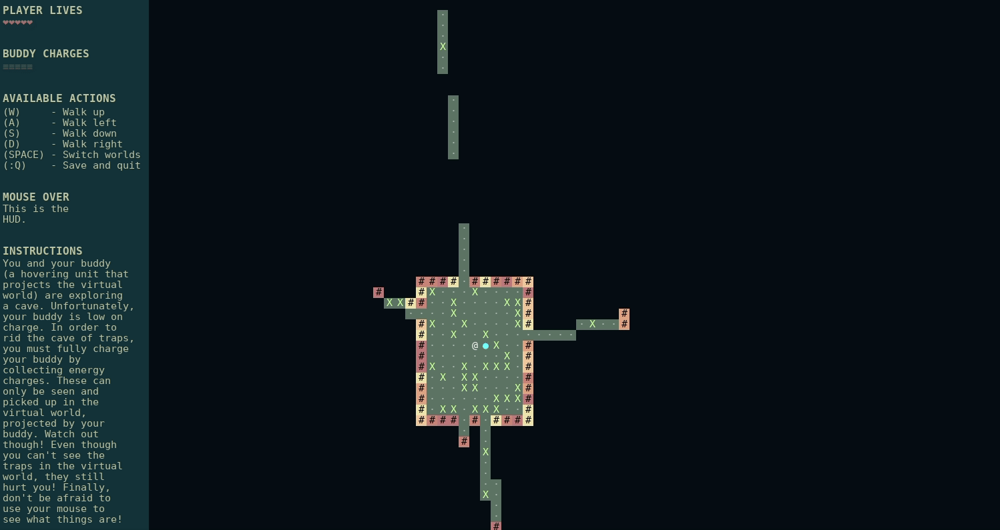
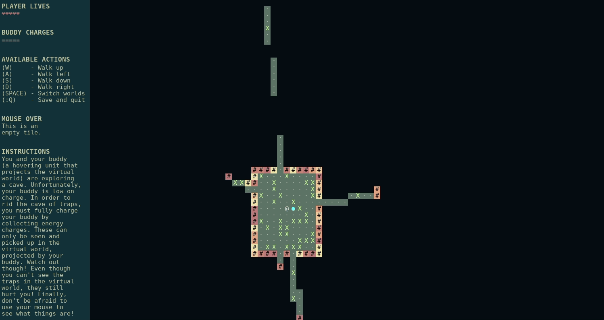
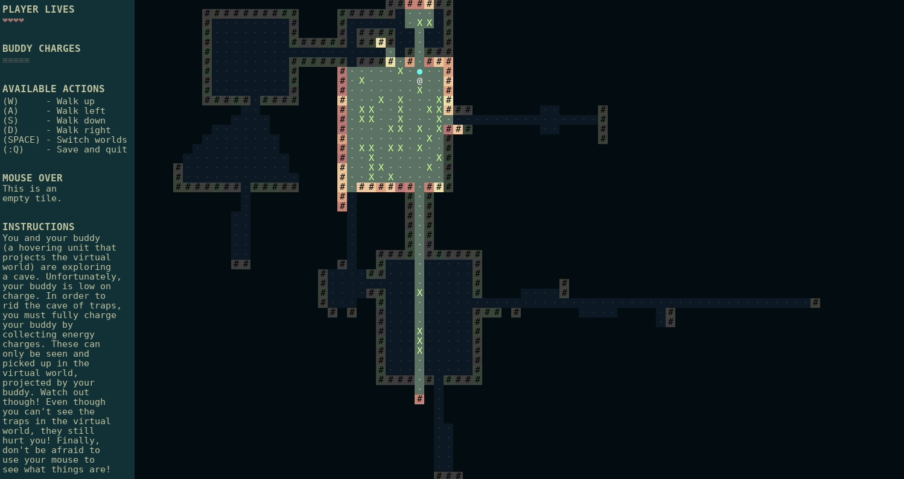

Virtual Fixtures
Virtual Fixtures is a roguelike cave exploration game developed in Java. The game was inspired by the graphic novel series East of West.
In Virtual Fixtures, you are trapped in a cave with your Buddy - a hovering AI bot which can project the virtual world for you. You need this projection in order to see where hidden energies are. The downside is that when in the virtual world, you cannot see the numreous traps that riddle the cave in the physical world. Therefore, you must switch back and forth between the two worlds - using one world to find the energies, and the other to avoid traps.
When you start the game, you are placed in the middle of a procedurally generated cave system. You can see this below. Note that the HUD displays what your cursor is currently hovering over.
A main feature that I implemented for this game was ray-casting. You can only see parts of the cave that are within your current line of sight (or parts that you have seen in the past). In order to do this, I used Bresenham's line algorithm. This can be seen below.
The main feature of the game is that you can switch between the physical and virtual worlds. In doing this, you can avoid traps while also searching for energies. Another caveat is that when in the virtual world, you can no longer see remembered parts of the cave. You are limited to what is currently in view only.
If you would like to see a more in-depth explanation of the game, please watch my video on YouTube.